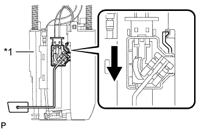

ДАТЧИК УРОВНЯ ТОПЛИВА В СБОРЕ (для моделей с одиночным баком) > УСТАНОВКА |
| 1. УСТАНОВИТЕ ДАТЧИК УРОВНЯ ТОПЛИВА В СБОРЕ |
|  |
Установите датчик уровня топлива на расширительный топливный бачок. Затем сдвиньте датчик уровня топлива вниз, чтобы установить его.
| *1 | Расширительный топливный бачок |
 | Сдвиньте |
Подсоедините разъем датчика уровня топлива.
| 2. УСТАНОВИТЕ ТОПЛИВОЗАБОРНИК С БЕНЗОНАСОСОМ И ДАТЧИКОМ УРОВНЯ ТОПЛИВА В СБОРЕ |
Установите топливозаборник с бензонасосом и датчиком уровня топлива в сборе (Нажмите здесь).